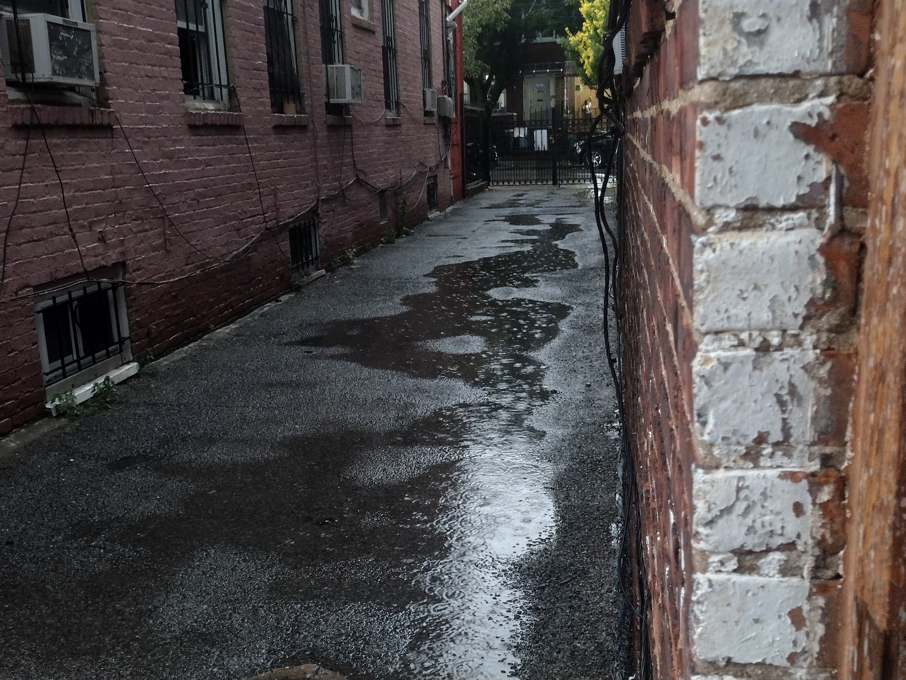

For this assignment I used three different colors as well as various shades of that color portray veriety throughout the image In Adobe Illistrator. What made me what to use this image was the puddles on the ground, and I really wanted to make that stand out, I am happy with how it came out.
HOME